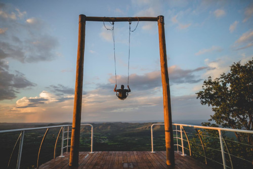

Balancéu - Lago Oeste
Balanço Gigante é a nova atração do Lago Oeste
O Balancéu tem uma estrutura de cinco metros de altura e uma visão privilegiada da imponente Chapada da Contagem, um dos locais mais belos e elevados do Planalto Central, alcançando até 1.254 metros de altitude. Ele será inaugurado como um presente aos visitantes e hóspedes do Recanto de Maria Flor, no Núcleo Rural Lago Oeste.
Localização:
O Núcleo Rural Lago Oeste é a região mais ecológica, com natureza preservada e com as mais belas paisagens naturais do Distrito Federal. Localizado na Região Administrativa de Sobradinho, a cerca de 25 km da Torre de TV do Eixo Monumental.